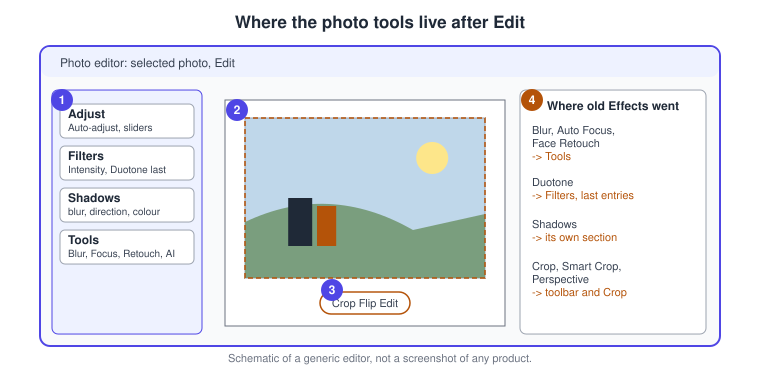
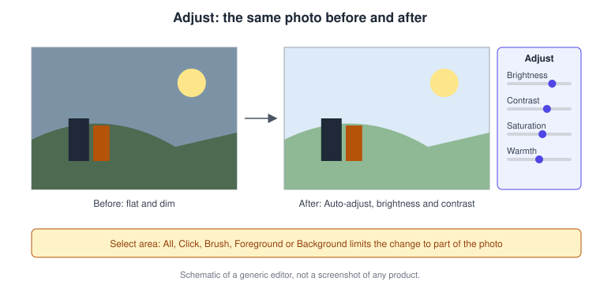
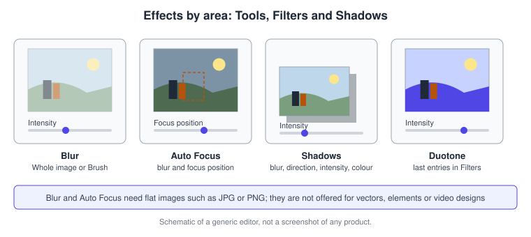
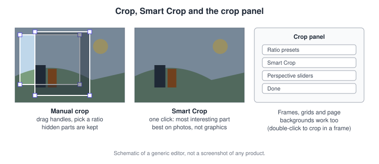
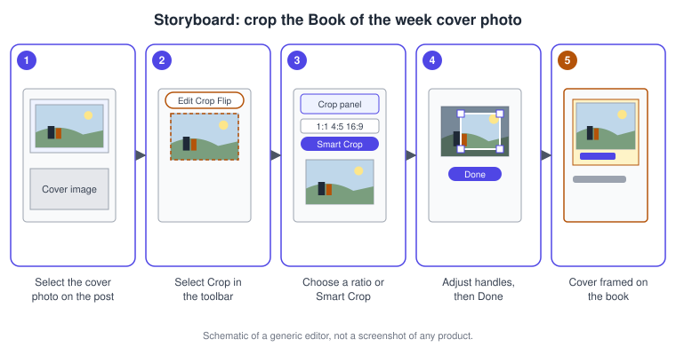
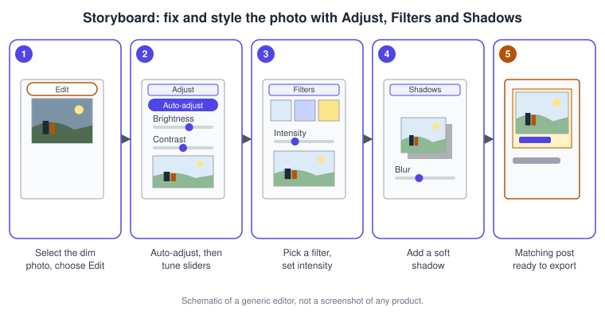

Photos and Image Editing
|
This content was generated with the assistance of AI and should be verified against the official documentation before being relied on in production. |
This page was checked against the official Canva Help Center on 2026-11-07. It covers the photo and image editing tools of Canva on the web, the desktop apps and the mobile apps. The core tools (Adjust, Filters, Shadows, Crop, Blur, Auto Focus and Face Retouch) are part of the editor itself and the Help Center lists no plan restriction for them; the Help Center only notes that some advanced features may be limited to specific plans and that an Edit button can be hidden by team brand controls. The AI-based tools differ. Upscale is a Standard AI tool, available on Canva Free, Pro, Teams, Business and Nonprofit; on paid plans it does not draw from the monthly AI allowance (fair use limits apply), while on Canva Free each use draws from the allowance. Image to Video is a premium AI feature that counts toward AI usage, and on the Free plan it works while allowance remains. Colorify is a third-party Premium app available on Canva Pro, Teams, Education and Nonprofits. The tiers are explained on Plans, Pricing and AI Allowance; prices are published at https://www.canva.com/pricing/ and are not repeated here. All tools on this page are generally available except where the Help Center labels a part as beta, which it does for the video flavour of Adjust. The generative and removal tools (Background Remover, Magic Eraser, Magic Expand, Magic Edit, Magic Grab and Magic Layers) have their own page, AI Photo Tools.
The running example is Bookshelf, the book catalogue and reading-list app designed in the Figma sub-section. Here the "Book of the week" Instagram post gets a cover photo that is cropped, brightened, given a matching look and a soft shadow.
One photo editor, several entry points
Canva describes its photo editor as the place to enhance, transform and refine images: quick adjustments, removing distractions, changing backgrounds, filters and AI tools. You can open it in three ways. From the homepage, select Photo editor and upload a photo or choose one from your files. From a design, select a photo and then Edit in the toolbar. From the Quick Create or Create tab of the homepage, choose Photo editor. After editing you add the image to a design or download it directly. Photos inside grids and frames can be edited the same way, which makes the photo editor the natural companion of Frames, Grids, Guides and Print Layout.
On the Edit side panel the headline tools are Magic Edit, Magic Layers, BG Remover, BG Generator, Upscale, Style Match, Image to Video, Adjust, Filters and Crop. This page covers the classic, non-generative ones plus Upscale, Style Match and Image to Video.

-
The Edit side panel groups Adjust, Filters, Shadows and Tools.
-
The selected photo stays on the canvas, so every change previews in place.
-
The quick actions toolbar next to the photo holds Crop, Replace, Copy style and Edit.
-
The old Effects section no longer exists; its tools moved as listed in the table below.
Where the old Effects went
The photo editor no longer has a single Effects section. The Help Center gives this map, which is the quickest answer to "where is the effect I used before".
| Older tool | Where it is now |
|---|---|
Blur, Auto Focus and Face Retouch |
Edit, then Tools (select See all) |
Duotone |
Edit, then Filters, scroll to the end |
Shadows |
Edit, then its own Shadows section |
On mobile the same families sit in the image toolbar, where Filter, Adjust and Image Tools are separate entries.
Add, replace and manage images
To add a photo from the Canva library, open Elements in the side panel, search or browse, and select an image. Your own files are added from Uploads, covered on Uploads, Stock Media and Imports. To swap a photo without losing its position, size or frame, select it, choose Replace in the toolbar and pick an image from Uploads or Photos; this also works for an image inside a frame or grid. A design can hold up to 1,400 images, and premium photos carry a crown icon; the Help Center says a Pro, Teams, Education or Nonprofits account unlocks the extended premium library. Canva AI and Magic Media can also generate images from a prompt, which is covered with the AI tools.
Adjust: brightness, contrast, colour and perspective
Select the photo, choose Edit and under Tools open Adjust. Drag the sliders for each setting, left to decrease and right to increase. The Select area control decides where the change lands.
| Select area | Effect |
|---|---|
All |
Adjusts the entire image |
Click |
Lets you select specific areas |
Brush |
Lets you paint over the areas to adjust |
Foreground |
Adjusts the main subject |
Background |
Adjusts everything behind the subject |
Auto-adjust gives a quick fix, and you can still change the intensity afterwards; Reset adjustment removes your changes. A Color section shows small boxes for the colours found in the photo: select one and drag the hue, saturation and brightness sliders to recolour that part. Invert toggles the photo’s colours and toggling it off restores them. A separate Perspective setting lives in Crop, where two sliders skew the photo horizontally or vertically. Adjust also works on video, where the Help Center labels the video settings as an early beta; for videos, Apply to all media copies an Auto-adjust or filter to every clip.
To give several photos the same settings on a computer, select the adjusted photo, choose Copy style in the quick actions toolbar, then select another image; repeat for each. This is desktop-only according to the Help Center.

Filters and Duotone
Filters change colour, brightness and style in one click. Select the photo or video, choose Edit, open Filters, select See all and pick one. The Intensity slider under the chosen filter dials the look up or down, Remove (None on mobile) takes the filter off, and clicking anywhere saves and closes the panel. Filters also work on photos in grids and frames. Duotone, a filter that recolours highlights and shadows with two tones, is found at the end of the Filters list.
Shadows
Select the photo, choose Edit, open Shadows and select See all to see the styles. Depending on the style, sliders control blur amount (soft or sharp edges), direction, intensity and colour; select the Color swatch to open the palette. Shadows add depth and suit photos that sit on a coloured background.
Blur and Auto Focus
Both live under Edit, Tools, See all. Blur offers a Brush tab, where you set Brush size and Intensity and paint the area to soften, and a Whole image tab with one Intensity slider; use the Remove brush to paint blur away again. A neat trick from the Help Center is to blur the whole image and then use the Remove brush to bring the subject back into sharp focus. Auto Focus keeps the subject sharp and softens the background automatically: Blur intensity controls the background softness, Focus position chooses what stays sharp, and Remove Auto Focus undoes it. Blur works on flat images such as PNG and JPG; it is not offered for vector graphics, elements or video designs.

Source: Canva Help Center: Blur photos
Crop, Smart Crop and perspective
Crop hides part of a photo without deleting it, so you can change the crop later. Select the photo and choose Crop on the toolbar, or double-click it; pick an aspect ratio (for elements that are not in frames), drag the handles to change what is visible, and select Done or click outside. Smart Crop is the one-click variant: select the photo, choose Crop, then Smart Crop and Done. It crops to the most interesting part of the photo, also works inside frames, grids and page backgrounds, and is best avoided on images with transparency and on non-photos such as screenshots or graphics. If it cuts something you want, resize and crop manually. Resize changes the whole element and Crop hides part of it; to stretch a photo without keeping its proportions, enter crop mode and hold Shift while dragging a handle. To crop media inside a frame or grid, double-click it (double-tap on mobile).

Upscale, colour restoration and Face Retouch
Upscale uses AI to sharpen blurry or pixelated images. Select the image, choose Edit and under Tools select Upscale; Canva picks the 4x or 16x level itself. Limits: JPG or PNG only (export a vector as PNG first), between 10 by 10 pixels and 25 megapixels in, up to 50 megapixels out, once per image, and results vary on faces and text. It checks the original size, so a cropped image that will not upscale should be downloaded, re-uploaded and upscaled as a new file.
Colorify, a third-party Premium app, restores colour to black and white photos: open Apps, search Colorify, upload or select a grayscale photo, select Add color and then Add to design. It does not work on colour photos and may miss elements. Within the photo editor, the Image Upscaler, Colorize, Pixelify and ColorMix apps and Mockups are also listed as apps; availability of any app can change.
Face Retouch, under Edit, Tools, See All, smooths skin and removes blemishes with a Smooth skin slider and a live preview; Remove effect undoes it. The Help Center says it works best on individual portraits.
Style Match and photo animation
Style Match applies ready-made styles such as Cartoon, Sketch or 3D Art: select a photo or graphic, choose Edit, Style Match, See all and a style. Copy style, in the toolbar, instead copies either the visual style or the basic style (transparency and colour) from one element to another. Both are premium AI features that count toward AI usage.
Image to Video turns a still into a five-second clip with subtle AI motion. Select the image, choose Edit, then under Tools Image to Video, pick Smart (default motion) or Custom (describe the motion) and select Generate 5 second video; Generate again tries another result. The image should be at least 256 by 224 pixels with an aspect ratio up to 5:1; transparent backgrounds and premium stock media are not supported, faces may not animate well, the clip has no audio and some results are three seconds. Education student accounts have it off until a school administrator enables it. Page and element animation, rather than AI motion, is covered on Animation and Transitions.
Desktop and mobile
The concepts are the same, but mobile reorders the tools. After selecting a photo on a phone, the toolbar shows Filter, Adjust and Image Tools instead of a single Edit entry, and Adjust settings are reached by swiping left. Copy style is available on desktop and, through More, on mobile. See Desktop, Mobile and Offline for the wider differences.
Procedures on the Bookshelf campaign
Crop the cover photo of the Book of the week post
-
Open the Bookshelf Book of the Week Instagram post.
-
Select the cover photo.
-
In the toolbar, select Crop.
-
Choose an aspect ratio, or select Smart Crop to let Canva frame the most interesting area.
-
Drag the handles to keep the book in view, then select Done.
-
Press Command + Z (Ctrl + Z on Windows) if the framing is not right.

Fix and style the photo
-
Select the dim photo and choose Edit.
-
Under Tools, open Adjust and select Auto-adjust, then fine-tune Brightness and Contrast.
-
If only the book is dark, set Select area to Foreground first.
-
Open Filters, select See all, pick a filter and lower its Intensity until the look matches the Bookshelf brand.
-
Open Shadows and choose a soft style; set blur and intensity.
-
Select the photo, choose Copy style, and click the other photos of the carousel to match them.

Common pitfalls
-
Looking for Effects: they are now spread across Tools, Filters and Shadows.
-
The Edit button can be missing when team brand controls restrict it.
-
Smart Crop suits photos; avoid it for graphics, screenshots and transparent images.
-
Blur and Auto Focus do not apply to vectors, elements or video designs.
-
Upscale runs once per image, only on JPG or PNG, and judges the original size, not the crop.
-
Image to Video rejects premium stock media and transparent backgrounds, and produces silent clips.
-
Colorify only handles black and white photos and is a paid third-party app.
-
On Canva Free, Upscale and the AI tools draw from the monthly allowance.
Where older guides are outdated
| Older statement | Current behaviour | Date |
|---|---|---|
A separate photo editor with an Effects section and effect apps |
One photo editor; Blur, Auto Focus and Face Retouch under Tools, Duotone under Filters, Shadows on their own |
2024-04-26 |
Photo tools are static; animating a photo means page animations |
Image to Video generates a five-second AI clip from a still |
Help Center, checked 2026-11-07 |
Upscaling needs a separate app |
Upscale is a built-in Standard AI tool under Tools |
Help Center, checked 2026-11-07 |
Recent changes
-
2024-04-26: the old photo editor was retired in favour of a new one with effects reorganised under Tools, Filters and Shadows.
-
2026-11-07: the Help Center describes the photo editor with Style Match, Image to Video and Upscale next to Adjust, Filters and Crop.